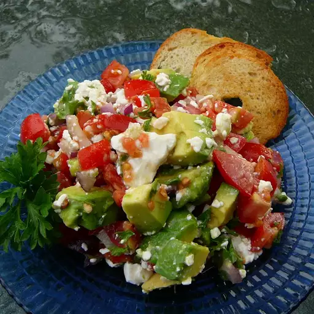

Avocado Feta Salsa

Ingredients
- 2 chopped plum tomatoes
- 1 ripe avocado - peeled, pitted, and chopped
- 1/4cp finely chopped red onion
- 1 clove garlic - minced
- 1tbsp snipped, fresh parsley
- 1tbsp chopped, fresh oregano
- 1tbsp olive oil
- 1tbsp red or white wine vinegar
- 4oz crumbled feta cheese
Steps
- In a bowl, gently stir together tomatoes, avocados, onion, and garlic.
- Mix in parsley and oregano.
- Gently stir in olive oil and vinegar
- Stir in feta cheese.
- Cover and chill for 2 to 6 hours.